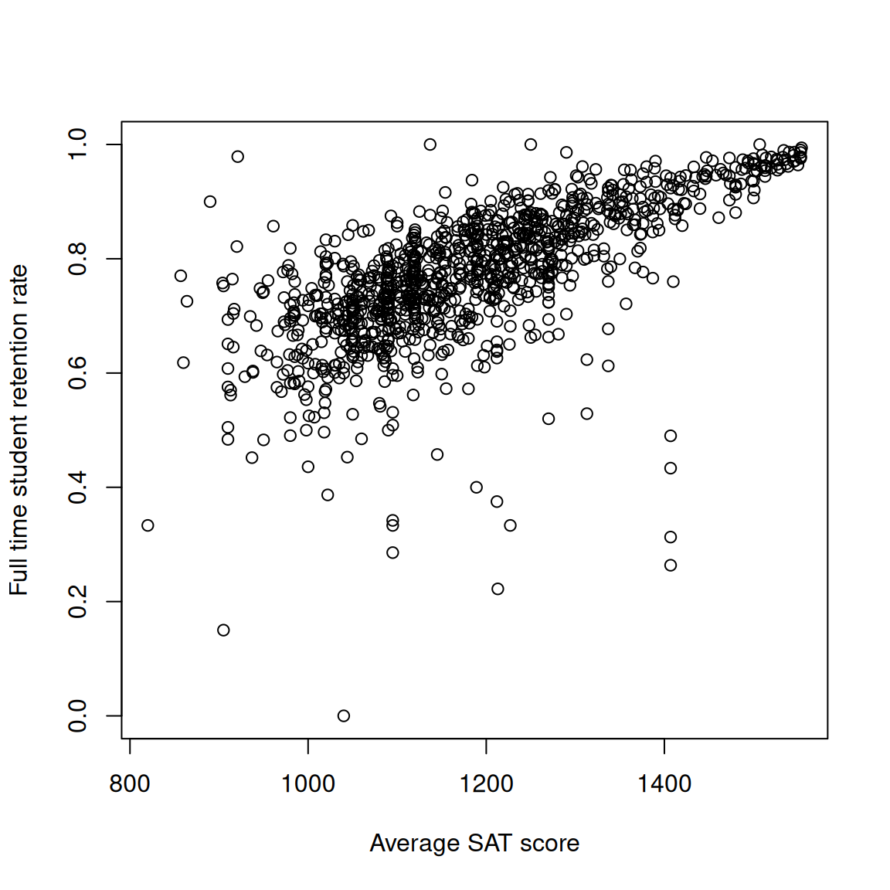
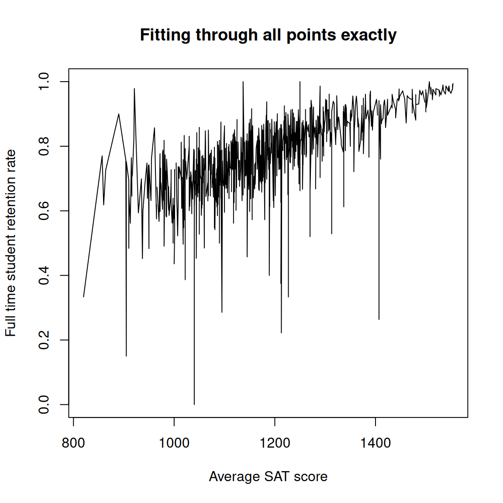
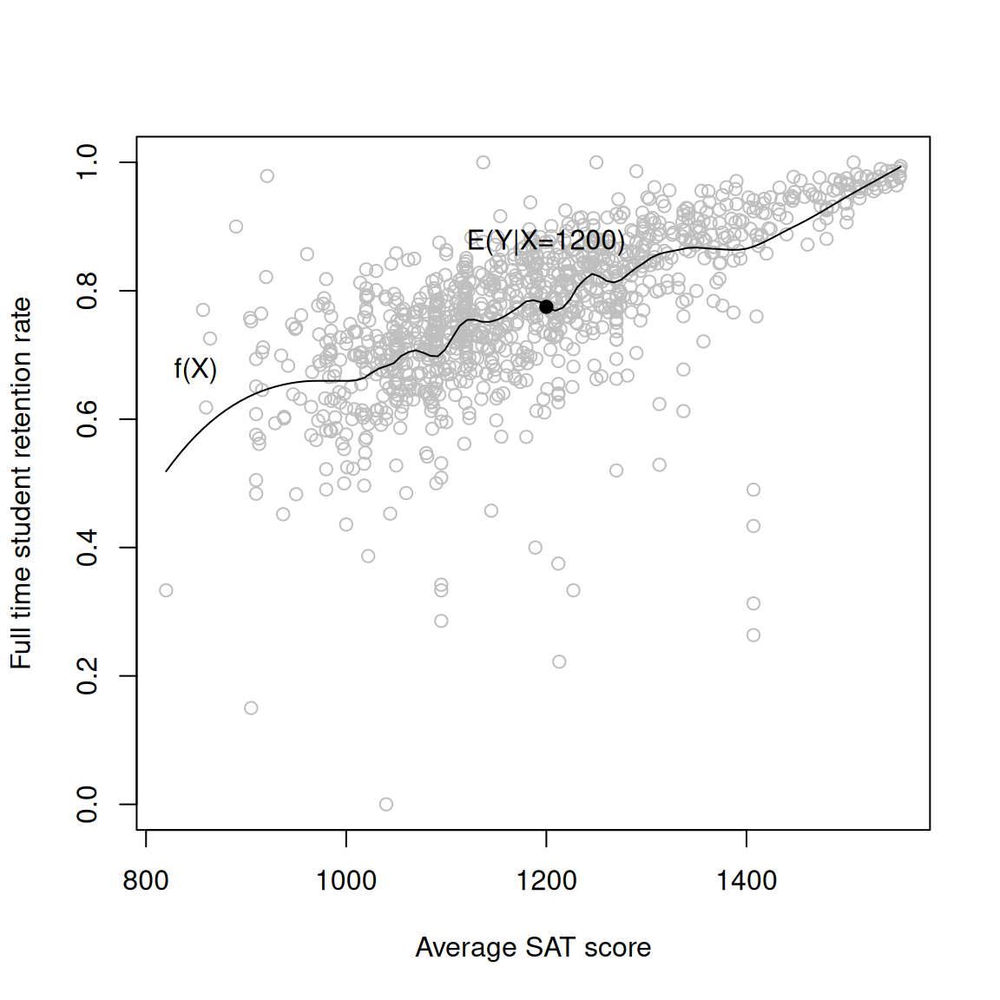
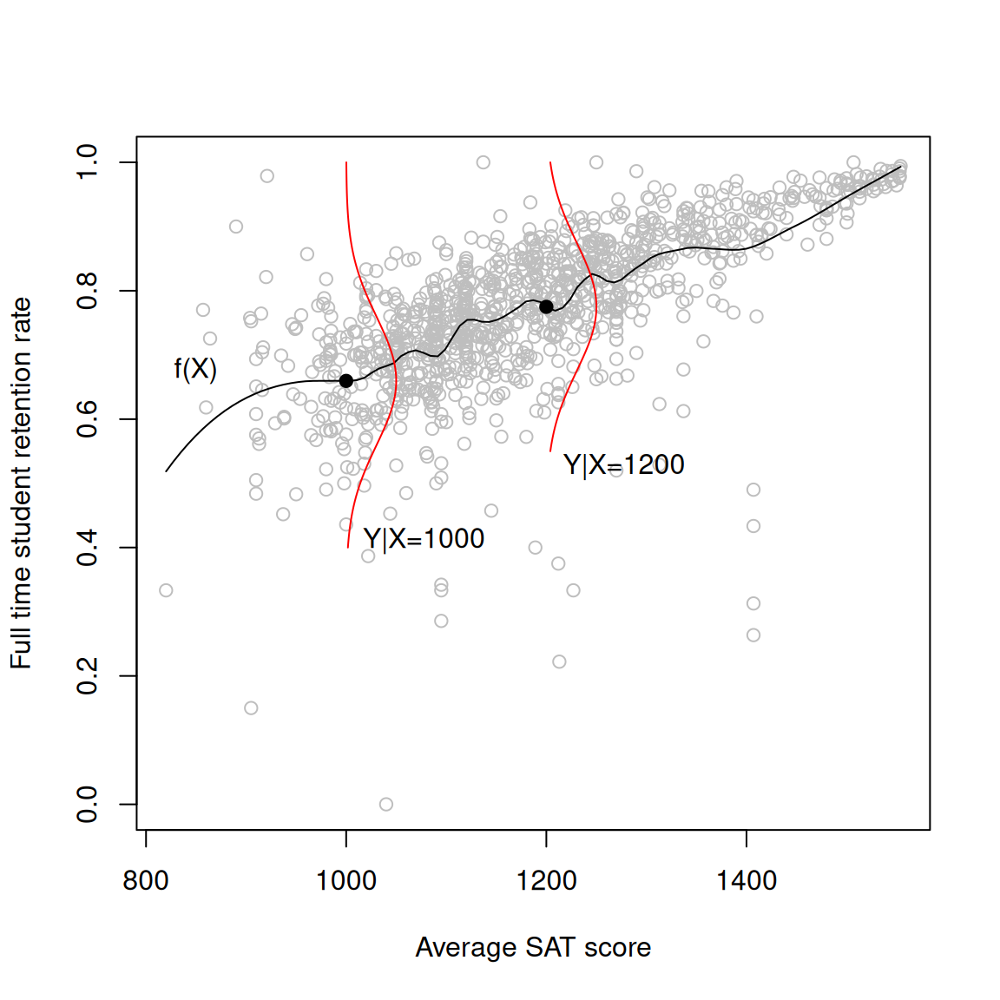
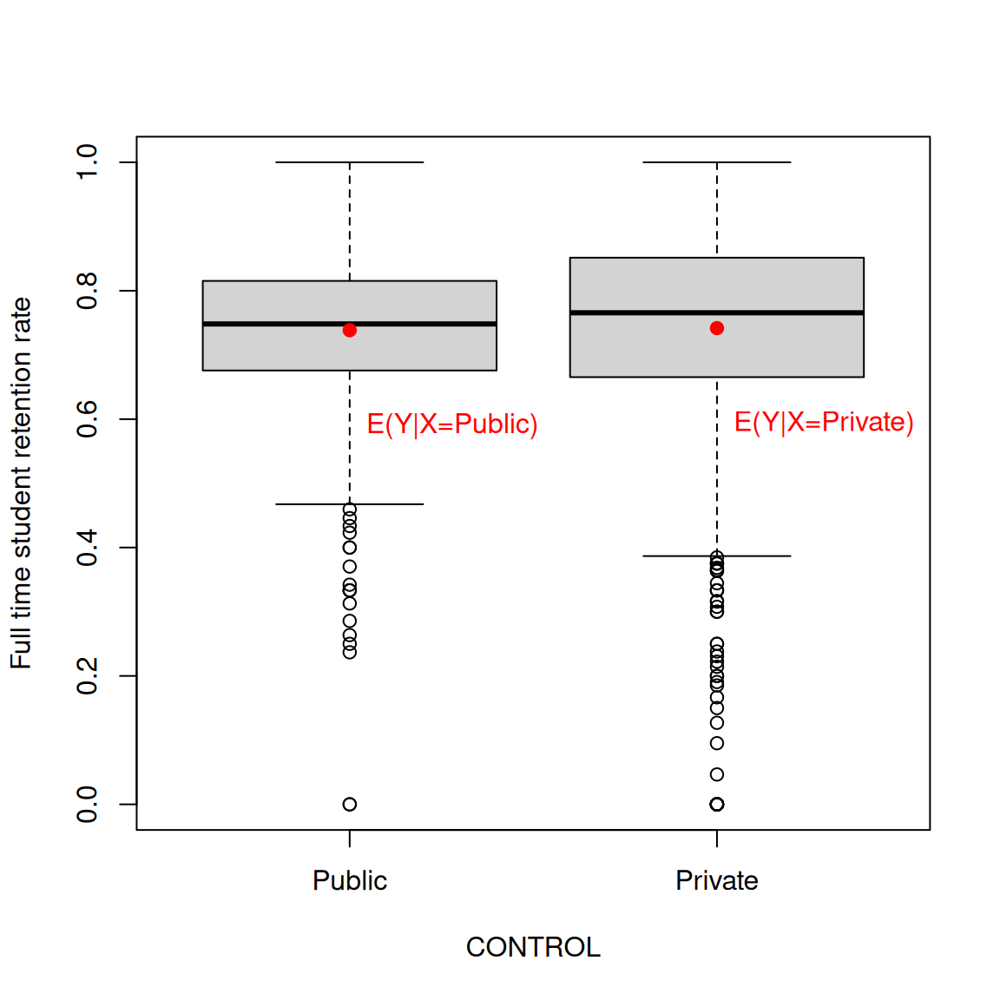
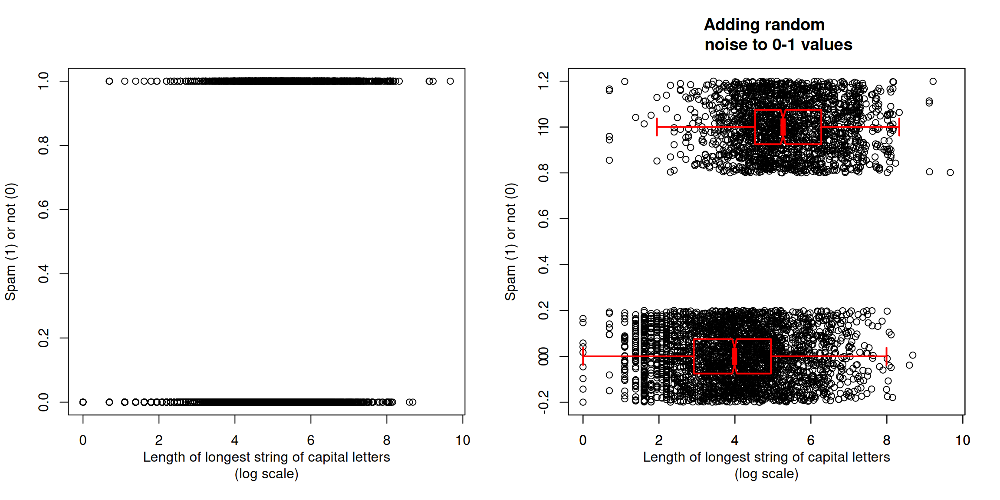
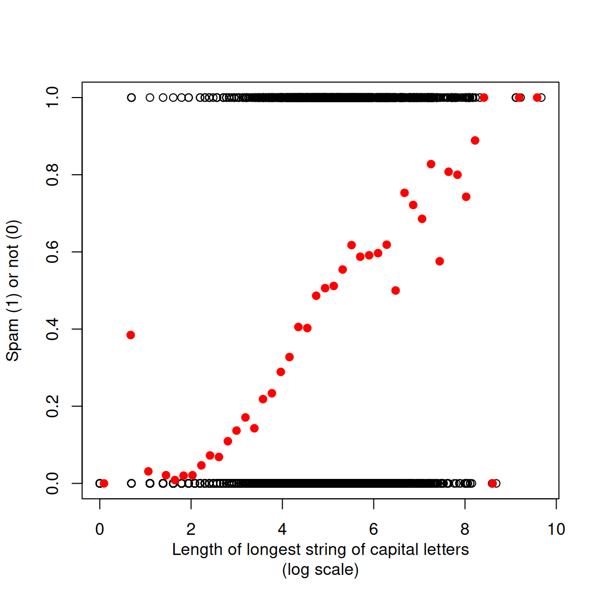
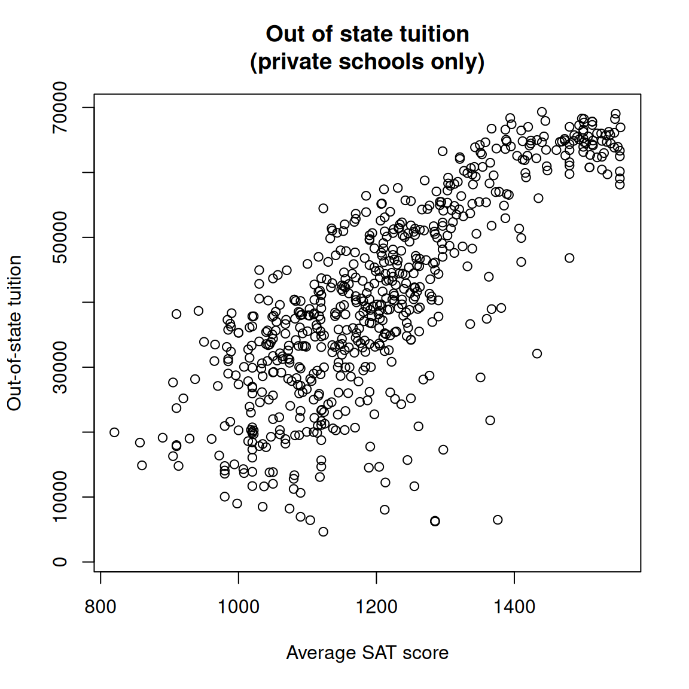
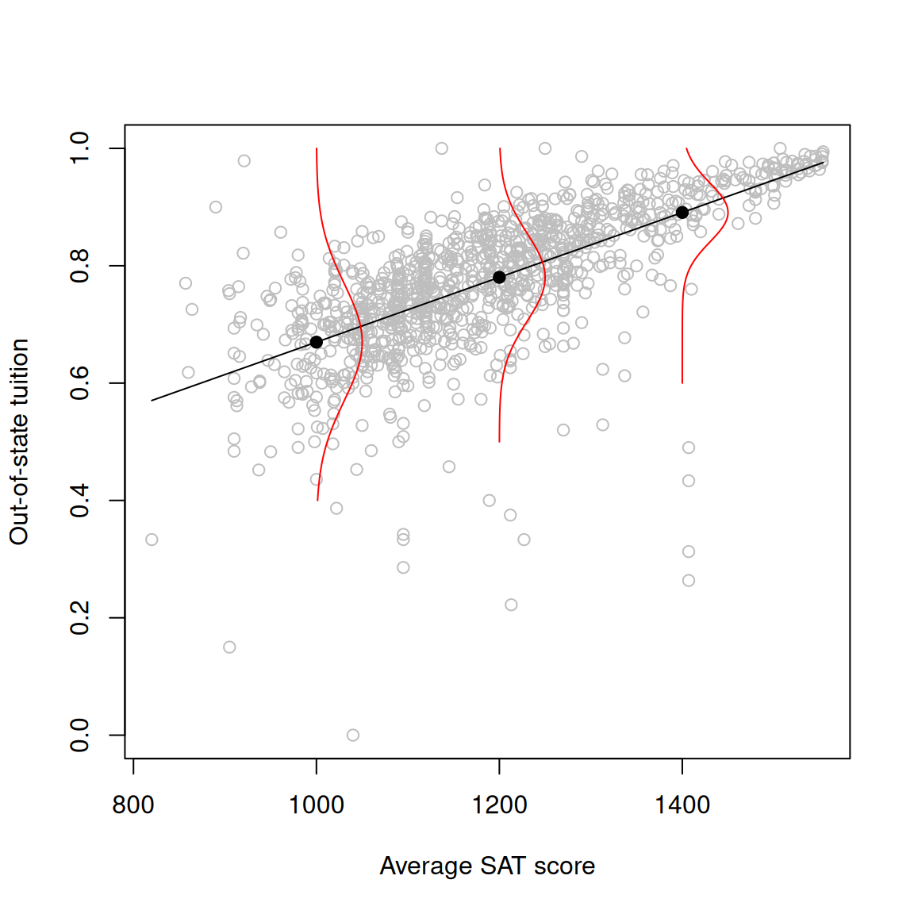

Case Study: Simple Regression
Corresponding reading
Chapter 6.1.1-6.1.7, 6.5.1 in Agresti and Kateri (2021)
We’ve talked about some simple population parameters like the mean or the variance of the population, and we introduced some standard estimators for those quantities.
We are going to introduce another common estimation setting, which is the slightly more complicated data analysis setting of regression. As you will see, there are a variety of different levels of abstraction with which we can consider this model, with the most common example, linear regression making the most assumptions.
We will get to estimation for this setting in the next module.
Questions/Goals for this Module
- Understand how we model a random variable \(Y\) as a function of another (possibly random) variable \(X\) by modeling \(E(Y|X)\)
- Understand how categorical \(Y\) or \(X\) values fit into this modeling.
- Understand what assumptions we are making when we move to the common example of regression modelling, linear regression
- Understand what is the common parametric model that is considered with linear regression
Example
Here we take data collected from the federal government for the 2024-25 academic year on universities in the US whose students receive federal grants (so basically all universities) available here
We show a scatterplot of two of the variables, the average SAT score and the full-time student retention rate:
We see that schools with higher average SAT scores also have higher rates of full-time students returning.
The Basics of Regression Modeling
Let’s go through the logic of how we might build up a model for this data.
The data here has a similar structure to the examples we discussed in the first module. Each observed data point \(X_i\) is in fact a vector, \(X_i=(X_i^1, X_i^2)\in R^2\).
Generally one of the components of \(X\) is prioritized and given the label \(Y\), so we can write our data vector as \((X_i,Y_i)\). \(Y_i\) is “prioritized” in the sense that we want to understand how \(Y_i\) changes as a function of \(X_i\). In our data example, we implicitly (by how we plotted the data), set our \(Y\) variable to be the retention rate, and the \(X\) variable to be the average SAT scores.
Exercise/Question
Our first fundamental step in this modeling process is to assume that the data are random variables. In what ways might we consider this data random? What conceptual problems are there?
There are different terminologies for what we call \(Y\) and \(X\):
| \(Y\) | \(X\) |
|---|---|
| dependent variable | independent variable |
| response | predictor |
| explanatory variable |
Exercise/Question
Go back to our original examples in module 1, and consider which of the two variables we would assign as \(Y\) versus \(X\) (there’s not necessarily a single correct answer here).
Modeling \(E(Y)\)
How \(Y_i\) changes as a function of \(X_i\) could be expressed as \[Y_i=f(X_i)\] However, this is actually problematic, since clearly when we look at data there is not an exact functional form \(f\) that does this exactly for each point (or at least not a nice one!).

What’s the problem? Well, just like we didn’t previously expect our observed data to be exactly equal to the population mean, we don’t expect our \(Y_i\) to be exactly equal to \(f(X_i)\) for any reasonable \(f\). So one way we can fix this problem is formulate our model in terms of the average value of \(Y_i\) \[E(Y_i)=f(X_i)\] However, notice that we have now made the expected value of \(Y\) equal to a random variable! That’s not an option. Instead:
- We can consider the \(X\) variable as a fixed value, i.e. not random. This makes a lot of sense for data where the investigator set the variable, like the spring example or the dosage variable. \[E(Y_i)=f(x_i).\] You will often see regression models described in this way.
- Alternatively, we recognize that \(X\) is random, but we want to describe the relationship of \(Y\) if when the corresponding value is \(X\). Conditional distributions allow for this, \[E(Y_i |X_i)=f(X_i)\] This is effectively equivalent to the first option, but it is a notation that more explicitly indicates that \(X\) might be random, but we’re not worrying about it.

This is the basic (simple) regression model – simple just refers to the fact that we only have one predictor variable \(X\), thought everything we’ve said so far can work for multiple \(X\).
Notice that we are assuming that \(f\) is the same for all observations – once I know an observation’s \(X\) value, this is a model for the average of the \(Y\) value. So we will frequently drop the \(i\) to describe the relationship as one that is general for any \((X,Y)\) from the population distribution, \[E(Y |X)=f(X)\]
Distribution of \(Y|X\)
Recall from probability, when we condition, then we get a new random variable, \(Y|X\). So far we have only given a specification of the mean of \(Y\) as a function of \(X\), but \(Y|X\) has an entire distribution for every realization of \(X\)!

We’ll look at modeling this distribution below in the context of linear regression.
Categorical Data
Categorical \(X\)
What if, for example, if instead of SAT scores, we used the variable of whether the school is public (\(X=0\)) or private (\(X=1\)),
Then \(X\) is a binary variable, \[X\in \{0,1\}\]
Then our function \(f\) takes as input only two possible values and so there are only two different expected values to consider.

So any possible function that does this can be re-written as: \[E(Y |X)=\begin{cases} \alpha_1 & X=1\\ \alpha_0 & X=0 \end{cases} \] where \(\alpha_1\) and \(\alpha_0\) are some constant. Notice that we can write this model simply with just two parameters.
We could rewrite this more succinctly as \[E(Y |X)= \alpha_0 I(X=0)+ \alpha_1 I(X=1)\] where \(I(\cdot)\) is the indicator function that is 1 if the quantity inside the parentheses is true and 0 otherwise.
Categorical \(Y\)
What if instead our \(Y\) is categorical? Consider data collected on emails, where \(Y\) is whether the email is spam or not. We can ask what relationship there is between an email being spam and other characteristics of the email, like the presence of capital letters or the number of dollar signs.

Note
Notice that scatter plots with categorical variables are not satisifying since the points all plot over each other. Boxplots are much better for demonstrating the data.
Again, \(Y\) is a binary variable \[Y\in \{0,1\}\] Then \[E(Y_i |X)=P(Y_i=1 | X)\] So our modeling of \(E(Y|X=x)=f(x)\) now becomes a model for the probability of outcome \(1\) given a certain value of the predictor \(X\).
We can visualize what we are estimating here by taking the proportion of 1’s for small windows of values of our \(X\):

We see the proportion of 1’s is increasing with the length of capital letters. We want to estimate a function \(f(x)\) function that explains this trend.
Restricting \(f\)
Linear Regression
If we let \(f\) be anything, then it’s going to be very hard to estimate. So we can try to restrict \(f\) to make it easier to estimate by writing it in terms of a small number of parameters, like we saw with categorical \(X\).
The simplest such model is a linear model: \[E(Y |X)= \beta_0 + \beta_1 X\] Now we have a two-parameter model for \(E(Y|X)\). Usually these will be the parameters of the population we want to estimate as well!
Categorical \(X\)
Notice what happens if \(X\) is binary, either 0,1: \[E(Y |X)= \beta_0 + \beta_1 X=\begin{cases}\beta_0+\beta_1 &X=1\\ \beta_0 &X=0 \end{cases} \] This is the same as my above model, with \(\alpha_0=\beta_0\) and \(\alpha_1=\beta_0+\beta_1\). So we see that we have two ways to write the same model (by same, I mean both ways of writing the model results in the set of values of \(E(Y_i |X)\)).
But the coefficients are different and have a different meaning. \(\alpha_0=\beta_0\) is always the mean of \(Y\) when \(X=0\), but \(\alpha_1\) is the mean of \(Y\) when \(X=1\), while \(\beta_1\) is the change in the mean of \(Y\) from going from \(X=0\) to \(X=1\).
This is frequently the case for models with categorical predictors, and neither is “right”. They give different parameters for describing the \(Y\) response, but they are equivalent models and you can always go back and forth between the two sets of parameters to describe the relationship of \(X\) to \(Y\).
Note
What if I didn’t encode \(X\) as \(\{0,1\}\) but something else like \(\{-1,1\}\)? (This is a common encoding in machine learning…) It’s still the same idea, we would just write our \((\beta_0,\beta_1)\) model with indicator functions, like we did with \((\alpha_0,\alpha_1)\), \[E(Y|X)= \beta_0 + \beta_1 I(X=1)\] Standard computing packages, however, will just re-encode the data to \(\{0,1\}\)
Non-linear model
A linear form for \(f(X)\) is an assumption – and it won’t always be a good one. Consider if instead our \(Y\) variable was the school’s out of state tuition,

Clearly, the linear model is starting to fail because the retention rate is plateauing for large values – not an uncommon phenomena for value \(Y\) that are limited to between certain values.
Non-linear models are beyond the scope of what we will cover in this class, but there are many straightforward (and less straightforward) extensions of what we will learn that can result in non-linear models. Interested students can look at Chapter 4 of my online book that goes along with STAT 131A for a non-technical look at some options.
Adding a parametric model assumption
As we said above, we haven’t made any assumptions about the distribution of \(Y\) so far. We’ll consider this now. For simplicity, we’ll stick to the linear regression model, but the same idea can be extended to other models.
Two common additional assumptions are
- Independence between the data points.
- Assume \(Y|X\) follows a parametric model, usually normal if \(Y\) is real-valued.
The first is straightforward to understand and we have discussed the assumption frequently. The second deserves more explanation.
Recall your conditional distribution theory: \(Y|X\) is a random variable with a distribution that depends on the realization of \(X\). Now we are proposing that distribution be normal, which means it is defined by two parameters, a mean and variance. We’ve already said what the mean of that normal distribution should be, \(f(X)=\beta_0+\beta_1 X\). So it remains to say what the variance is.
- The simplest (and most common) option is to say all observations have the same variance, let’s call it \(\sigma^2\), \[Y|X \sim N(\beta_0+\beta_1 X , \sigma^2)\]
Like independence, this is an extremely common assumption that is quickly assumed, but is quite strong and we will see has a very important impact on our later conclusions.
- We could let the variance vary with \(X\), \[Y|X \sim N(\beta_0+\beta_1 X , \sigma^2(X))\] We can see with our example here, that might make sense – the points look more variable for lower values of \(X\) than higher values of \(X\):

While totally possible, in general you do not see this frequently because it adds another task of figuring out what \(\sigma^2(X)\) should be and people just accept the assumption.
The exception is in the special case when \(X\) is categorical. In this case, letting the variance “vary with \(X\)” simply means a different variance for each category of \(X\). So in the two-group setting this would be \[Y |X \sim \begin{cases} N(\alpha_1,\sigma_1^2), & X=1\\ N(\alpha_0,\sigma_0^2), & X=0 \end{cases} \]
This is probably one of the most common statistical models in all of statistics, and is called a two group analysis, meaning we have two groups
Alternative description in terms of error
Recall that if a random variable \(Z \sim N(0,\sigma^2)\) then if we define \(Y=Z+\mu\), then $YN(,^2).
We can use this in reverse to realize that our model of independent \(Y_i\) each distributed as \[Y_i|X_i \sim N(\beta_0+\beta_1 X_i , \sigma^2)\] can be equivalently written, conditional on \(X_i=x_i\) as \[Y_i = \beta_0+\beta_1 x_i +\epsilon_i\] where \[\epsilon_i\stackrel{i.i.d}{\sim}N(0,\sigma^2).\] This means that we can consider \(Y_i\) to be a linear function of \(x_i\), plus a random error \(\epsilon_i\). \(\epsilon_i\) is often equated to measurement error, particularly in physical experiments like our spring example.
Note
Note that unlike the \(Y_i\), the \(\epsilon_i\) are generally assumed to be \(i.i.d.\), since they each have the same mean and variance. This is because of our shared variance assumption we discussed above.
Categorical \(Y\): Logistic Regression
The above can be extended to other distributions of \(Y\). In particular, if \(Y\) is binary, we could say that \(Y|X\) is Bernoulli, with probability \(P(Y=1|X)\) given by a function \(f(X)\).
Of course, we need the range of \(f(X)\) to be between \((0,1)\)! So a linear function of \(X\) will not be a good choice since the range of a line is outside of \((0,1)\). We will introduce a common alternative of how to do this as the course progresses, which leads to what is often called logistic regression.
References
Agresti, Alan, and Maria Kateri. 2021. Foundations of Statistics for Data Scientists. Chapman; Hall/CRC.